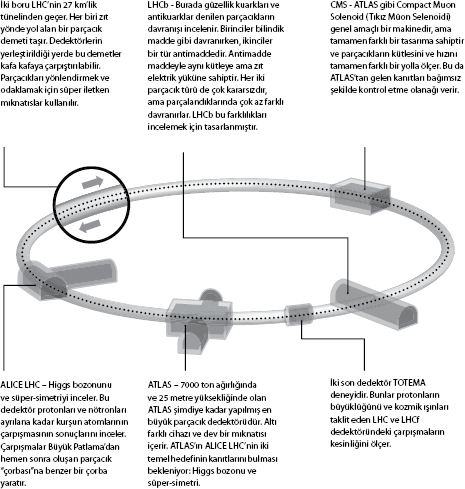

Evrenin esas dokusunu ararken parçacıkları çarpıştırmak
Dr. Steve Myers, CERN'de Hızlandırıcılar ve Teknoloji Bölümü yöneticisi
Dünyanın en büyük parçacık hızlandırıcısı Büyük Hadron Çarpıştırıcısı (LHC) 2008 yılının Eylül ayında ilk çalıştırıldığında dünyanın sonunun yakın olduğuna dair söylentiler ortalıkta dolaşmaya başladı. Görünüşe bakılırsa Fransa-İsviçre sınırında toprağın derinliklerinde CERN'in işlettiği LHC'ye bağlı 27 km'lik tünelde açılacak minyatür bir kara delik hepimizi yutacaktı. Ama hala hayattayız.
"Parçacıkları hızlandırıp çok yüksek enerji seviyelerine çıkaran parçacık hızlandırıcılar ve çarpıştırıcılar, bilimcilere evrenin yaratılışından saniyenin milyarda biri kadar sonra var olan koşulları kontrollü bir şekilde yeniden yaratarak incelemelerini sağlıyor. Bu incelemeler sayesinde doğanın temel bileşenlerini, kuvvetlerini ve yasalarını anlama olanağına kavuşuyoruz."
Steve Myers
2008'de bir elektrik arızasının 14 aylık bir kesintiye yol açmasından sonra LHC şimdilerde evrenin nasıl oluştuğuna dair mevcut kuramların anahtar niteliğindeki özelliklerini doğrulayan çok sayıda faydalı bilgi göndermektedir. Yakalanması zor atomaltı parçacıklar, karanlık madde gibi çeşitli muammaların açıklamaları ve atomların neden kimi özelliklere sahip olduğu gibi temel sorulara cevaplar bulmak için araştırmalar sürüyor.
LHC söz konusu sorulara cevaplar arayan ve dünyanın çeşitli yerlerinde bulunan birçok parçacık hızlandırıcıdan sadece biri. Fizikçiler kaba güç kullanarak ışık hızına yakın enerjilerde parçacıkları çarpıştırmak suretiyle cevaplar bulmayı ummuyorlar. Çoğu parçacık hızlandırıcı dairesel yeraltı tünellerinden oluşuyor. Bu tünellerden geçen parçacıklar tünel duvarlarındaki son derece güçlü mıknatıslarla yönlendiriliyor. Manyetik güçle harekete geçirilen iki zıt parçacık "demet"i birbirine doğru hızlandırılıyor. Fakat kafa kafaya çarpışmalarını sağlamak o kadar da kolay değil, bu daha ziyade, 10 km mesafeden iki iğneyi birbirine fırlatmaya benziyor.
Tekil atomaltı parçacıkları görmek mümkün olmadığından, çarpışmadan geriye kalan kalıntıyı inceleyerek, onların hareketleri ve özellikleri ölçülüyor. Manyetik bir alandan geçerken parçacıkların izlediği yolun fotoğrafını çeken fizikçiler onları teşhis edebiliyorlar; pozitif yüklü parçacıklar bir şekilde yoldan saparken, negatif yüklüler başka şekilde sapıyor ve onların kütleleri yollarının manyetik alanla ne derece büküleceğini belirliyor. Fizikçiler halihazırda pek çok parçacığın özelliklerini biliyor, ama LHC'nin çok geçmeden yeni özellikler sergileyen, yakalanması zor parçacıkları da açığa vurması bekleniyor. Özellikle bir parçacığı arıyorlar: Higgs bozonu, nam-ı diğer "Tanrı Parçacığı".
Tanrı Parçacığı'nı Aramak
Atomların keşfinden bu yana fizikçiler atomun ağırlık taşımasına hep şaşırmışlardır. Filin, arabanın, hatta kalemin kütlesinin olmasını anlamak kolaydır, ne de olsa hepsi atomlardan oluşur. Fakat atomun kütlesi nereden gelir? İngiliz kuramsal fizikçi Peter Higgs, 1964'te İskoçya'nın dağlık arazilerinde yürürken aradığı cevabı buldu.
Higgs parçacıkların aslında bir kuvvet alanı (Higgs Alanı) içinde yol almaya çalıştıkları için kütlelerinin olduğunu anladı, tıpkı en iyi fotoğrafı çekmek için sürekli yanaşmaya çalışan bir fotoğrafçı kalabalığının içinden geçmeye çalışan ünlü biri gibi. Higgs alanı Higgs bozonu adındaki atomaltı parçacıklardan oluşur. Kütlesi olmayan bir parçacık uzayda yol alırken, çevresinde Higgs bozonları kümelenince alanı büker. Bunun anlamı Higgs bozonunun diğer tüm parçacıklara kütlelerini vermesidir. Değişik parçacıklar farklı sayıda Higgs bozonu çekerler, işte bu nedenle farklı kütlelere sahiptirler.
Diğer parçacık hızlandırıcılar Higgs bozonu arayışında ilerleme kaydettikleri halde, hiçbiri onu bulacak kadar güçlü değildi. LHC ise farklı bir çapa sahip: En büyük parçacık dedektörü yedi katlı bir bina kadar uzun ve en büyük mıknatısı beş jumbo jet ağırlığında ve 18 ton altını eritecek enerjiyi depolayabiliyor. İstatistiklere göre Higgs bozonunu bulabilecek herhangi bir hızlandırıcı varsa, o da LHC'ymiş gibi görünüyor.
Açıkçası bu gerçekleştirilmesi çok zor bir görev. Higgs bozonu anında bozulduğundan onu doğrudan görme şansı yok. Ayrıca bu parçacığın tam olarak hangi çarpışma enerjilerinde ortaya çıktığı da belli değil. Parçacıkların saniyede 600 milyon kez çarpışmaları söz konusu olduğundan, belki de parçacık çoktan LHC'de üretildi, ama varlığı diğer veri yığını içinde kayboldu.
LHC'nin sonunda Higgs bozonunu bulacağından emin olan fizikçiler, böylece "Standart Model" yapbozunun son parçasını da eklemiş olacaklar. Bu, kuramcıların "Her Şeyin Teorisi"ne en çok yaklaştıkları modeldir. Her Şeyin Teorisi bütün bilindik olguları –örneğin elektronlar gibi bilindik parçacıkları– ve onlar üzerinde etkili olan temel kuvvetleri –kütleçekimi hariç– açıklayacak teoridir.
Eğer LHC, Higgs bozonunu bulamazsa kuramsal fizik krize girer ve evrendeki bütün atomları oluşturan parçacıklarla ilgili anlayışımızı yeniden ele almak gerekir.
